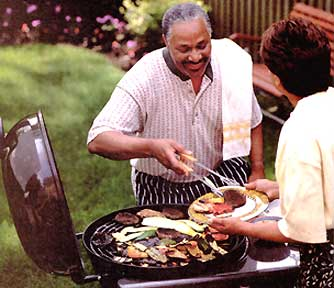

As sure an emblem of summer as cutoff jeans and watermelon stands, nothing beats the sizzle of burgers on the grill as evidence that we've returned full circle to the season of sun and insects, toil and revelry. This summer, try out one of Mother Earth News' Tex-Mex Turkey Burgers, Burgers Marrakech, Lentil Burgers or Venison Chorizo Burgers for a new twist on an old favorite.
Though we may associate the basic burger with American backyards and diners, it probably originated in 14th-century Germany. The Hamburg steak-low-grade, shredded beef with regional spices-made its American debut in the kitchens of German immigrants in the 1880s. Thought some sources trace the patty's origin to the 1885 county fair in Seymour, Wisconsin, it is common belief that burger met bun at the 1904 World's Fair in St. Louis. The popularity of the sandwich prompted the opening of the world's first chain of hamburger restaurants, White Castle, in 1924.
In recent years, many of us have shied away from the all-beef patty, and with good reason: Following the results of a 12-year study, the British Medical Journal concluded that cancer deaths were 40% less common among vegetarians than among meat eaters. There is also the quality of commercially processed meat to consider. Livestock are exposed to a myriad of pesticides and antibiotics, and ground hamburger is more likely to harbor E. coli bacteria than other cuts of beef. The cattle industry also leaves a heavy footprint on the land: Less than half the harvested agricultural acreage worldwide is used to grow food for people - the rest is reserved to grow livestock feed.
Fortunately, there are tasty alternatives for the health- and environment-conscious consumer who wants to enjoy more than potato salad at the next barbecue. You can reduce fat content by using leaner meats and increase fiber by adding grains and veggies to the mix. If you've sworn off meat altogether, consider veggie burgers - they aren't quite the sawdust composites they used to be. Due to their low fat content, veggie burgers don't always hold up well on the grill, so we recommend wrapping them loosely in foil poked through with a few holes so the smoke can penetrate. Spike veggie burgers with salsa and a slice of cheese and you'll never miss the beef.
(Makes 4-5 small burgers)
1 pound ground turkey (dark meat)
1 small onion, finely chopped
¼ teaspoon minced serrano or jalapeno pepper (or ½ teaspoon chipotle puree; see "chipotle mayonnaise")
1/3 cup chopped cilantro leaves
2 teaspoons guajillo or ancho chili powder* or regular chili powder
½ teaspoon each: cumin seeds and ground cumin
¼ teaspoon salt
2 tablespoon cornmeal
Wearing rubber gloves, remove seeds from the hot pepper before chopping (forget this step if you're using the puree). Lightly crush the cumin seeds with a mortar and pestle. In a large bowl, mix together all ingredients except turkey. Mix in the turkey with your hands and form patties no thicker than a half-inch. Place on a platter and cover with plastic wrap, then refrigerate a few hours before grilling. Serve on a bun or wrap in a flour tortilla with salsa or chipotle mayonnaise.
*Guajillo and ancho chili powder is made from dried, ground chilies and can be purchased at Hispanic groceries or by mail. See "chipotle mayonnaise."
(Makes 4-5 burgers)
Garden herbs, tomatoes and cucumbers are a nice addition to these summer burgers. Use whatever herbs you have on hand.
1 pound ground lamb or beef
1 small red or green pepper, diced
2 tablespoons each: chopped mint leaves, oregano, Italian parsley
2 large cloves garlic, minced
1 teaspoon white wine vinegar
1 ½ teaspoons ground cumin
¼ teaspoon ground allspice
½ teaspoon salt
dash cayenne pepper, freshly ground pepper
4-5 pita rounds
lettuce, chopped tomato
In a mixing bowl, combine all ingredients except the lamb or beef. Work in the meat with your fingers until blended. Shape into medium-sized, half-inch-thick patties. Cover and refrigerate until the grill is ready. Grill for about six minutes per side. Remove the burgers and heat the pita bread on the grill for about 30 seconds per side. Serve with lettuce, tomato, and Raita (yogurt sauce) if you like.
1 cup (8 ounces) plain yogurt
1 large garlic clove, minced
1/8 teaspoon ground cumin
¼ teaspoon salt
freshly ground pepper
1 small cucumber, peeled and diced
chopped mint leaves for garnish (optional)
Whisk together all ingredients except the cucumbers and refrigerate until ready to serve. Add cucumbers just before serving; otherwise the sauce will be too watery.
(Makes 4 burgers)
1 cup uncooked green lentils
1 cup finely chopped spinach
¼ cup grated carrot
2 green onions, chopped
½ cup whole-wheat bread crumbs
½ cup grated cheddar cheese
½ teaspoon salt
freshly ground pepper, dash cayenne pepper
1 large egg white
4 whole-wheat buns
lettuce leaves
In a medium saucepan, cover lentils with about two inches of water. Bring to a boil, cover and reduce to a simmer. Continue to cook lentils until mushy-about an hour. Check occasionally to be sure there's enough water. Meanwhile, combine chopped spinach and grated carrots in a large bowl. In another bowl, toss together the rest of the ingredients except the egg white. When the lentils are done, drain thoroughly and stir them into spinach and carrots so spinach wilts. Let cool for about ten minutes before adding the rest of the ingredients and the egg white. Form into patties about a half-inch thick, wrap and refrigerate for at least two hours.
In a large, nonstick skillet, heat two teaspoons of canola or olive oil over medium to medium-high heat. Place the burgers in the pan. Cook for about three minutes per side until very crispy; don't undercook or they won't hold their shape. Serve on buns with lettuce or caramelized onions and chipotle mayonnaise, or ditch the buns and top patties with pepper relish.
1 tablespoon olive oil
1 each: red pepper, green pepper, yellow or purple pepper
dash of salt
1 teaspoon each coriander seeds, sugar
Cut peppers into thin strips. Slightly crush coriander seeds with a mortar and pestle.
Heat oil in a large skillet and add peppers. Simmer on medium heat for approximately ten minutes, stirring occasionally. When the peppers are soft, stir in fennel and sugar. Serve hot or at room temperature.
Here's a delicious way to use up any leftover venison. A friend gave us this recipe for the spicy Mexican pork sausage, but we've adapted it for lean venison.
It's best to make the chorizo at least three hours before cooking and refrigerate until needed so the spices can penetrate the meat. This recipe is spicy but not hot. If you like a bit more kick, add a little ground cayenne pepper or fresh hot pepper.
1 lb. ground venison
1 tablespoon white wine or cider vinegar
2 tablespoons water
2 large cloves garlic, minced
* For hot chorizo, add a half of a serrano or small jalapeno, seeded and minced
Mix the spices together in a separate bowl:
½ teaspoon salt
1 teaspoon oregano
2 tablespoons chili powder
2 teaspoons paprika
½ teaspoon each: cinnamon, ground cumin, ground coriander
¼ teaspoon ground cloves
Combine vinegar, water, garlic and hot pepper (optional), and pour over meat. Stir spices together and add to the meat. Mix well with your hands. (If you want to check the seasonings, fry up a small patty in a little oil.) Cover the top of the venison with plastic wrap and refrigerate.
4-6 buns, rolls or corn tortillas
Topping ideas:
•chipotle mayonnaise, salsa or sour cream
•sliced or chopped garden tomatoes
•chopped leaf or Romaine lettuce
•chopped scallions
•sliced avocado
Shape the meat into thin, sausage-sized patties. Venison is such a lean meat that it may stick to the grill, so we apply the veggie burger technique: Wrap loosely in aluminum foil and poke a few holes through so smoke can penetrate. Cook just until the center is barely pink, which won't take long on a hot fire. Don't overcook or the chorizo will be dry. Serve on warm buns or tortillas with toppings. (To warm the tortillas, wrap in foil and place on the cooler side of the grill while you're preparing the venison.)
To ensure that the meat you use is free of hormones and antibiotics, purchase organic or naturally raised ground beef and chicken. If that's not possible, buy meat from a reputable butcher and grind it yourself. Cook or freeze the meat within 24 hours.
· Thoroughly wash your hands and work surfaces before and after preparing the burgers. -After placing burgers on the grill, wash the platter they were on, or use a clean platter to avoid cross-contamination. If you're also grilling vegetables or veggie burgers, use separate platters and utensils.
· Since natural oxidation can cause the meat to turn brown, color isn't always an indication that meat is sufficiently cooked. Use an instant-read meat thermometer to check the internal temperature. If you're using beef, shoot for medium at 140°F Ground dark meat chicken or turkey should read about 170°F, and about 165° F for white meat. Grilled meat can cook unevenly, so check it in a few spots.
The plain burger easily lends itself to a great variety of toppings and garnishes, making it easy to go beyond plain bun and ketchup to create your own designer patty.
TOPPINGS & ACCOMPANIMENTS:
· BBQ sauce or a thick salsa
· chipotle mayonnaise
· caramelized onions
· roasted garlic
· sliced large green olives
· crumbled bleu cheese
· chopped herbs such as parsley, basil, thyme, and oregano
· a thin slice of mozzarella topped with a tomato slice and a basil leaf
· sauteed sweet peppers
· sliced grilled vegetables
· assorted greens: arugula, baby spinach leaves, garden lettuce
BREADS:
· pita bread
· sun-dried tomato or spinach tortillas
· Italian or French bread, sliced or sub-style
· whole-wheat buns or rolls
Grilling onions is fairly self-explanatory: slice, oil and set on grill. If you have the time, however, slowly cooking onions over a low flame brings out their natural sweetness. Serve them hot, piled on top of your favorite burger.
3 medium white, yellow or Vidalia onions, peeled
1 tablespoon olive oil
salt
1 tablespoon dry white wine
Chop ends off onions, then cut them into quarter-inch slices. Heat oil in a large, nonstick skillet over medium heat; add onion rings. Sprinkle them with salt. Stir onions until they reach a sizzle, then lower the heat to a simmer and cook for 20 minutes, stirring about every three to four minutes until onions are golden brown. Toss in the wine and cook the onions another minute. Serve immediately or reheat when the burgers are ready
Chipotle puree: In a food processor or blender, puree chipotle chiles and the sauce from one 7-ounce can. Put into a glass jar and refrigerate for up to four months. Add a little smoky puree to salsas, soups, pasta sauce, chili, or anything that could use a little bit of heat.
½ cup mayonnaise (commercial or homemade)
1 teaspoon chipotle puree
Whisk together the mayo and puree. Add more puree, a little at a time, if you like it hotter. Refrigerate in a plastic container until ready to use.
|
 PHOTO: STOCKMARKET PHOTO Nothing says summer like a burger right off the grill. |
|
|